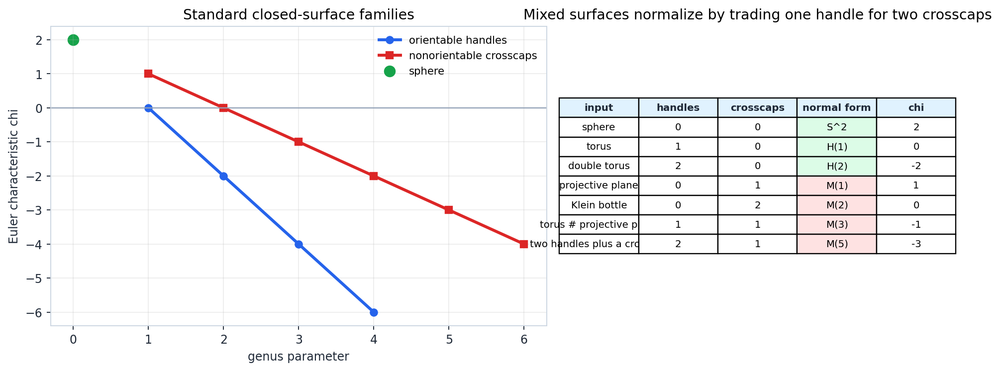
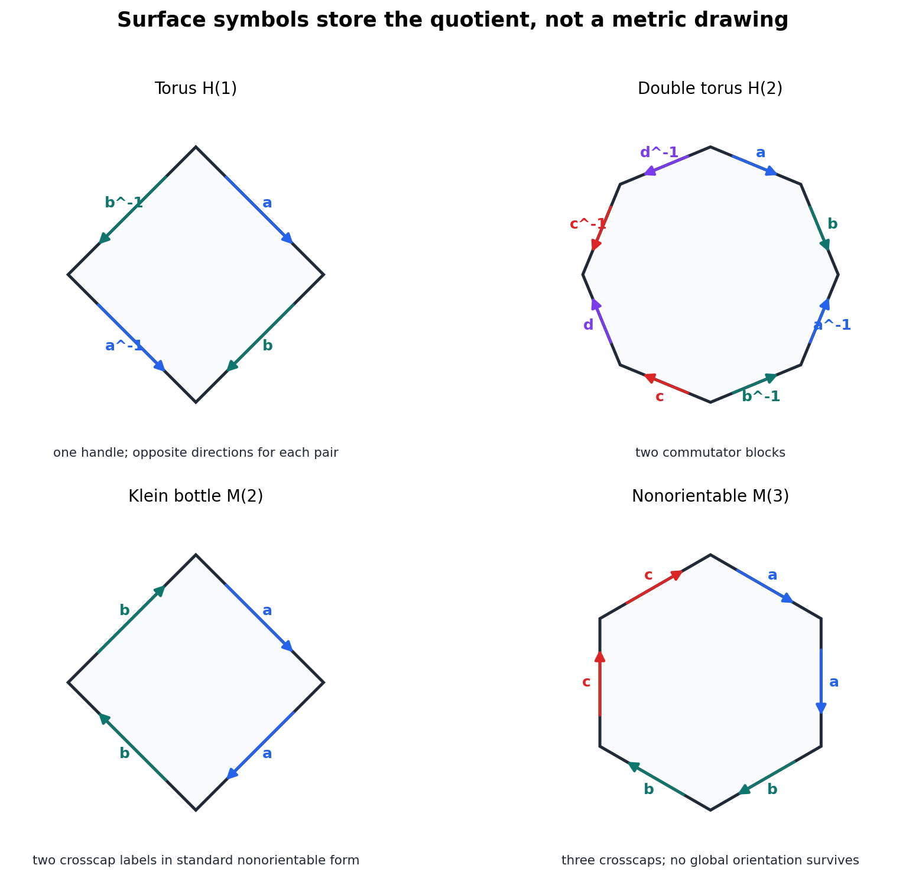
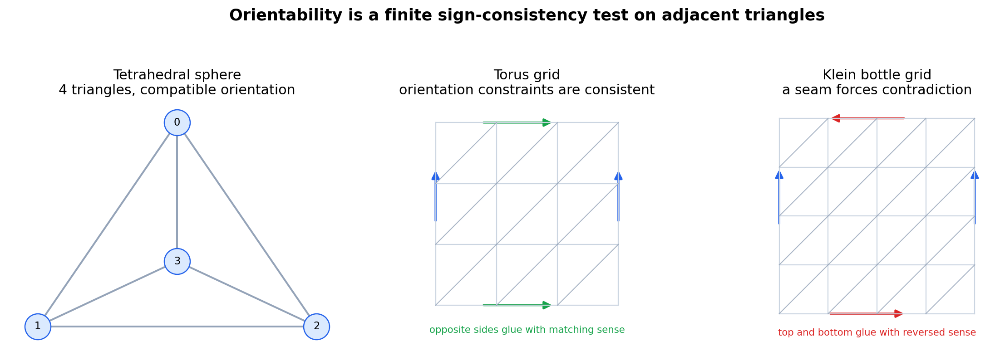
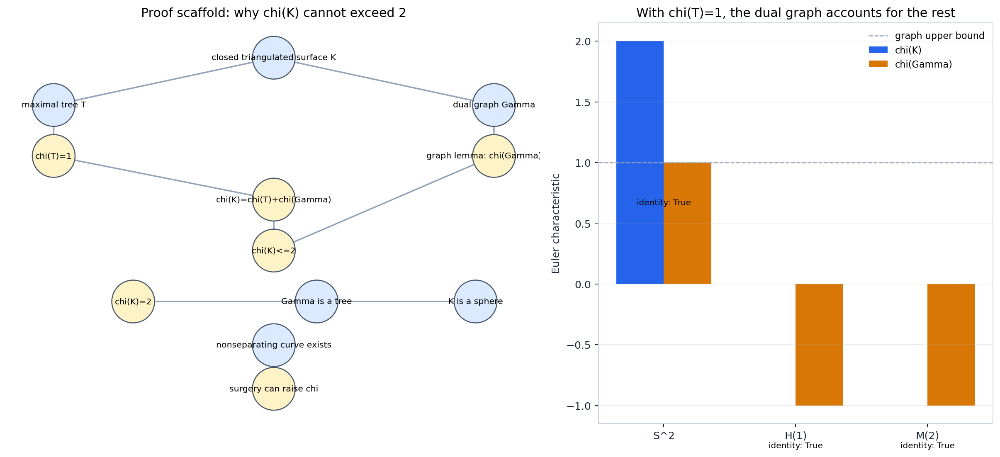
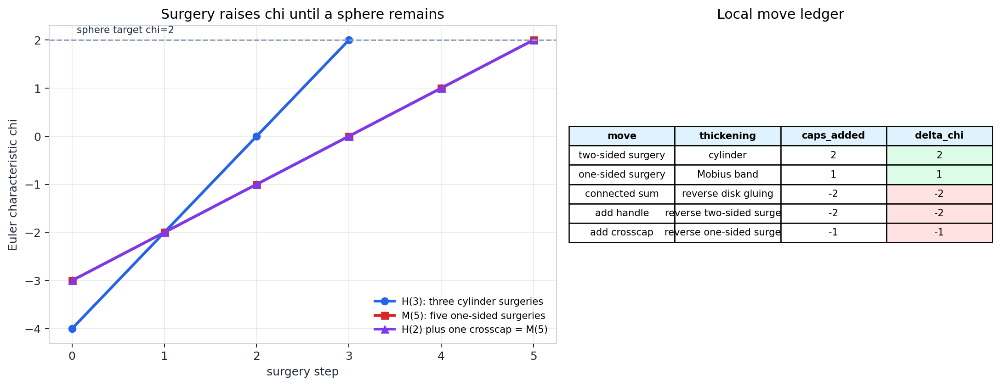

Chapter 7
Printed pp. 149-172 | PDF pp. 159-181
Surfaces As A Classification Problem
Closed connected surfaces are classified by turning pictures into finite records: polygon words, orientability constraints, Euler characteristic, and surgery moves.
Source: Basic-Topology/chapter-07-surfaces/07-surfaces.ipynbDeck metadata: lecture-design-system-2026-05-23
Chapter Setup
Closed Surfaces Supply Finite Data
Definition
A closed surface here is compact, connected, without boundary, and locally modeled on the plane.
Working Data
The classification proof uses finite records: edge words, cell counts, compatible triangle orientations, and cut-and-cap operations.
- Local planar charts do not determine the global surface.
- Triangulations turn topology into \(V,E,F\) and adjacency data.
- Polygon symbols turn quotient construction into a boundary word.
Local test
Every point sees a disk-like neighborhood.
Global question
How many handles or crosscaps must the whole surface carry?
Invariant habit
Compute \(\chi\), orientability, and normal form from the same model.
Concept inventory: closed surface, standard families, triangulable modelsNotebook check: final-sanity.json
Classification Ledger
Every Closed Connected Surface Lands In One Row

Classification Target
The normal forms are \(S^2\), the orientable handle surfaces \(H(p)\), and the nonorientable crosscap surfaces \(M(q)\).
Ledger Formulas
\(\chi(H(p)) = 2 - 2p\)
\(\chi(M(q)) = 2 - q\)
Mixed Normalization
If \(m\) handles and \(n>0\) crosscaps appear together, the standard record is \(M(2m+n)\).
Artifact: surface-classification-ledger.pngCheck: classification-ledger-checks.json
Warning
Euler Characteristic Is Necessary But Not Complete
Common Mistake
Equal \(\chi\) does not imply the same surface. Orientability is independent data.
| Surface | Orientable? | \(\chi\) | Normal family |
|---|---|---|---|
| \(H(1)\) | yes | 0 | one handle |
| \(M(2)\) | no | 0 | two crosscaps |
| \(H(2)\) | yes | -2 | two handles |
| \(M(4)\) | no | -2 | four crosscaps |
Decision Pair
\((\operatorname{orientable?}, \chi)\)
For closed connected surfaces, this pair determines the classification row and parameter.
- If orientable and \(\chi=2-2p\), the surface is \(H(p)\).
- If nonorientable and \(\chi=2-q\), the surface is \(M(q)\).
- The sphere is the orientable case \(p=0\), written separately as \(S^2\).
Ledger lesson: \(\chi\) plus orientability, not \(\chi\) aloneRows drawn from surface-classification-ledger.csv
Polygon Symbols
Surface Symbols Are Quotient Instructions

Surface Symbol
Walk once around a quotient polygon and record each edge label with its arrow direction.
- Each edge label must occur exactly twice.
- Opposite directions in standard pairs support an orientable symbol.
- Same-direction pairs signal crosscap behavior in standard form.
\(a b A B\)
\(a b A B c d C D\)
\(a b A b\)
\(a a b b c c\)
Artifact: surface-symbol-edge-schemas.pngCheck: polygon-schema-checks.json
Proof Roadmap
Polygon Symbols Reduce Toward Normal Form
1. Pair labels
Reject invalid words unless each label occurs exactly twice.
2. Read arrows
Opposite directions give orientable handle blocks; same directions create crosscap blocks.
3. Preserve quotient
Allowed word moves reorganize the polygon without changing the glued surface.
4. Normalize
The word becomes a product of handle blocks or crosscap blocks.
Orientable Block
\([a,b] = a b A B\)
A handle contributes two generators and lowers \(\chi\) by two.
Crosscap Block
a a
A one-sided pair contributes one crosscap and lowers \(\chi\) by one.
Compact Proof Cue
The proof is constructive: transform a valid polygon word through quotient-preserving moves until its blocks match the classification ledger.
Roadmap: polygon symbols and normal formsArtifact route: surface-symbol-edge-words.png and schemas figure
Orientability
Orientability Is A Global Sign Constraint

Test
Orient every triangle so adjacent triangles induce opposite directions on their shared edge.
- Choose a starting triangle sign.
- Let each shared edge force the neighboring sign.
- Propagate through the dual graph.
- Report success or the first contradiction.
Artifact: triangulated-surface-orientability.pngCheck: triangulated-surface-examples.json
Orientability Checks
The First Contradiction Is The Evidence
| Model | \(V,E,F\) | \(\chi\) | Orientable? |
|---|---|---|---|
| tetrahedral sphere | 4, 6, 4 | 2 | yes |
| 3 by 3 periodic torus | 9, 27, 18 | 0 | yes |
| 4 by 4 twisted Klein bottle | 16, 48, 32 | 0 | no |
Same \(\chi\), Different Outcome
The torus and Klein bottle both have \(\chi=0\), but only the torus passes the orientation propagation test.
Klein Contradiction Record
At one shared edge the stored sign is \(-1\), while the next forced relation requires \(+1\). A loop through the dual graph has reversed the local orientation.
Instructor Prompt
Ask which invariant separates \(H(1)\) from \(M(2)\). The answer must mention orientability, because \(\chi\) cannot do the job.
Data from triangulated-surface-examples.jsonContradiction: shared edge (10, 14) in the Klein model
Euler Characteristic
A Primal Tree And Dual Graph Split The Ledger

Euler Identity
\(\chi(K)=\chi(T)+\chi(\Gamma)\)
Here \(T\) is a maximal tree in the one-skeleton and \(\Gamma\) is the complementary dual graph.
Tree Input
A maximal tree has \(\chi(T)=1\). A connected graph always has \(\chi\le 1\).
Artifact: euler-dual-tree-proof-scaffold.pngCheck: dual-tree-euler-checks.json
Proof Roadmap
Euler Characteristic Cannot Exceed Two
1. Triangulate
Work with a finite combinatorial surface \(K\).
2. Choose \(T\)
A maximal tree in \(K^{(1)}\) contributes \(\chi(T)=1\).
3. Build \(\Gamma\)
The remaining cell data is recorded by the dual graph.
4. Bound \(\chi\)
\(\chi(K)=1+\chi(\Gamma)\le 2\).
| Model | \(\chi(T)\) | \(\chi(\Gamma)\) | \(\chi(K)\) |
|---|---|---|---|
| sphere | 1 | 1 | 2 |
| torus | 1 | -1 | 0 |
| Klein bottle | 1 | -1 | 0 |
Equality Case
If \(\chi(K)=2\), then \(\chi(\Gamma)=1\), so the dual graph is a tree. In this proof scaffold, that is the sphere case.
Roadmap: maximal tree plus dual graphIdentity holds for all checked models
Surgery
Surgery Raises \(\chi\) Toward The Sphere

Two-Sided Surgery
Cut out a cylinder and cap two boundary circles.
\(\Delta\chi=+2\)
One-Sided Surgery
Cut out a Mobius band and cap one boundary circle.
\(\Delta\chi=+1\)
Bookkeeping
The removed thickening has \(\chi=0\). The new disks account for the entire Euler change.
Artifact: surgery-connected-sum-ledger.pngCheck: surgery-ledger-checks.json
Connected Sum
Connected Sum Reverses The Bookkeeping
Connected Sum Formula
\(\chi(S \# T)=\chi(S)+\chi(T)-2\)
Remove one disk from each surface, then glue the two boundary circles.
Proof Cue
Disk removal subtracts one from each Euler characteristic. Boundary gluing adds no new two-cell, so the total loss is two.
| Operation | Result | \(\chi\) |
|---|---|---|
| \(H(1)\#H(1)\) | \(H(2)\) | -2 |
| \(M(1)\#M(1)\) | \(M(2)\) | 0 |
| \(H(1)\#M(1)\) | \(M(3)\) | -1 |
Mixed Case
A handle plus one crosscap has the same normal form as three crosscaps: \(H(1)\#M(1)\cong M(3)\).
Table route: connected-sum-lab.csvAll three example formulas agree with normal form
Applied Lab
Surgery Euler Lab Tracks The Route To \(S^2\)
Orientable Path
\(H(3)\to H(2)\to H(1)\to S^2\)
\(-4,-2,0,2\)
Nonorientable Path
\(M(5)\to M(4)\to M(3)\to M(2)\to M(1)\to S^2\)
\(-3,-2,-1,0,1,2\)
Inspection Target
Watch the step size: two-sided surgeries move by \(+2\), one-sided surgeries move by \(+1\).
Artifact: html/surgery-euler-lab.htmlRoute data: surgery-ledger-checks.json
Normal Form Lab
The Classification Theorem As An Algorithm
Input
A surface description with \(m\) handles and \(n\) crosscaps.
- If \(m=n=0\), record \(S^2\).
- If \(n=0\), record \(H(m)\) and \(\chi=2-2m\).
- If \(n>0\), record \(M(2m+n)\) and \(\chi=2-(2m+n)\).
| Description | Normal form | \(\chi\) |
|---|---|---|
| sphere | \(S^2\) | 2 |
| two handles | \(H(2)\) | -2 |
| two crosscaps | \(M(2)\) | 0 |
| one handle plus one crosscap | \(M(3)\) | -1 |
| three handles plus two crosscaps | \(M(8)\) | -6 |
Lab Identity
Once a crosscap is present, handles convert into pairs of crosscaps in the normal form ledger.
Table route: surface-normal-form-lab.csvCheck: surface-normal-form-lab.json
Classification Proof Roadmap
The Separate Ledgers Assemble The Theorem
Construct
Polygon symbols and triangulations encode the surface by finite data.
Orient
Triangle propagation decides whether the standard family is orientable.
Count
Euler characteristic determines the handle or crosscap parameter.
Simplify
Surgery reaches the sphere; reversing surgery rebuilds the standard form.
Classification Statement
Every closed connected surface is homeomorphic to exactly one of \(S^2\), \(H(p)\), or \(M(q)\), with the parameter fixed by \(\chi\) and orientability.
Uniqueness Check
Orientability separates the two families. Within a family, the Euler formula recovers \(p\) or \(q\), so different parameters cannot represent the same surface.
Workflow Example
A nonorientable model with \(\chi=-3\) must satisfy \(2-q=-3\), hence \(q=5\), so its classification row is \(M(5)\).
Roadmap required by planner briefCore identities verified in final-sanity.json
Recap
Three Ledgers Must Agree
Word ledger
Which quotient polygon or edge schema assembles the surface?
Orientation ledger
Can triangle orientations be propagated without contradiction?
Surgery ledger
Which cut-and-cap route reaches the sphere, and how does \(\chi\) change?
Instructor Checkpoint
Classify a model with \(\chi=0\). Ask first whether it is orientable; only then choose \(H(1)\) or \(M(2)\).
Artifact Contract
The notebook checks verify polygon pairing, orientability outcomes, the dual-tree identity, surgery deltas, and nonempty chapter artifacts.
Takeaway
Surface classification is a theorem, but in practice it is a disciplined habit: construct, orient, count, simplify, and compare the ledgers.
Chapter 7: SurfacesArtifacts: classification, symbols, orientability, Euler, surgery, lab